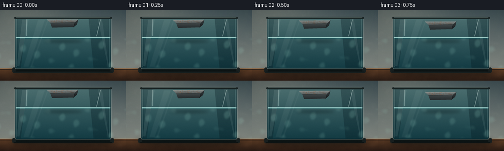
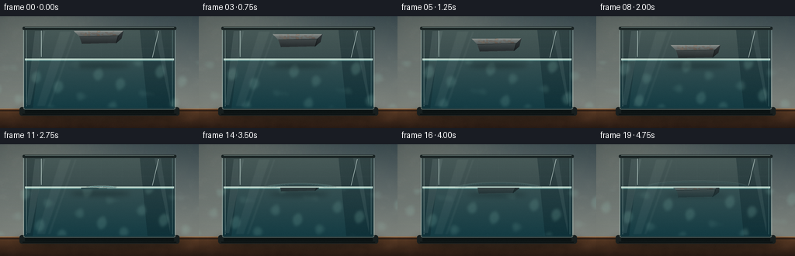
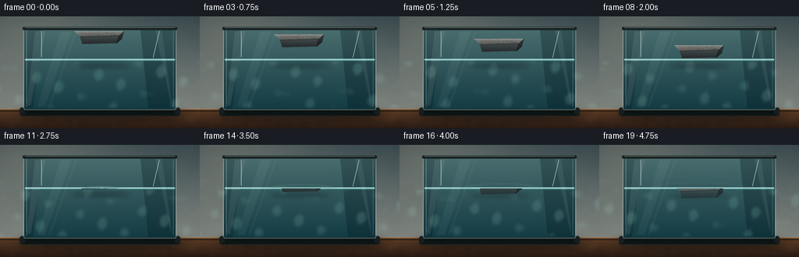
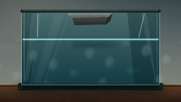
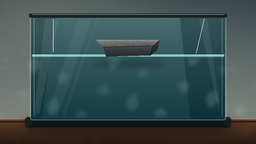
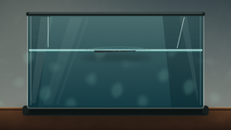
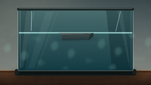
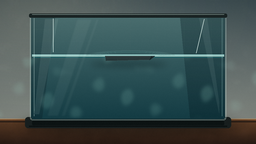
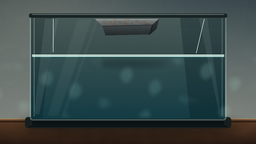
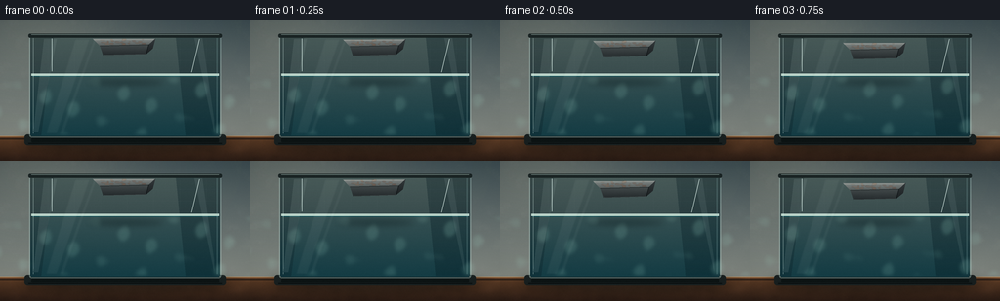

CODING AGENTS AS PIXEL WORLD MODELS
traex/DeepSeek-V4.1-Flash · phygen_006
点击播放 · 原生 RGB 像素
逐轮保存的候选
回放视频、检查图与代码变化。
每份候选均可单独播放。实际图片检查记录在下方工具轨迹中。
候选 01播放与检查图
点击播放 · 原生 RGB 像素

展开代码变化
--- 上一保存版本
+++ 本次保存版本
@@ -0,0 +1,464 @@
+from __future__ import annotations
+
+from pathlib import Path
+
+import numpy as np
+from PIL import Image, ImageDraw, ImageFilter
+
+import artifact_io
+
+
+CASE_DIR = Path(__file__).resolve().parent
+W, H = 256, 144
+N, FPS = 20, 4.0
+SS = 4
+IW, IH = W * SS, H * SS
+
+
+def s(value: float) -> int:
+ return int(round(value * SS))
+
+
+def rgba(color: tuple[int, int, int, int]) -> tuple[int, int, int, int]:
+ return color
+
+
+def vgradient(size: tuple[int, int], top: np.ndarray, bottom: np.ndarray) -> Image.Image:
+ w, h = size
+ t = np.linspace(0.0, 1.0, h, dtype=np.float32)[:, None, None]
+ arr = top[None, None, :] * (1.0 - t) + bottom[None, None, :] * t
+ arr = np.broadcast_to(arr, (h, w, 3)).astype(np.uint8)
+ return Image.fromarray(arr, "RGB")
+
+
+def polygon_mask(size: tuple[int, int], points: list[tuple[float, float]]) -> Image.Image:
+ mask = Image.new("L", size, 0)
+ ImageDraw.Draw(mask).polygon([(s(x), s(y)) for x, y in points], fill=255)
+ return mask
+
+
+def paste_masked(base: Image.Image, layer: Image.Image, mask: Image.Image) -> None:
+ base.paste(layer, (0, 0), mask)
+
+
+def make_noise(seed: int, size: tuple[int, int], blur: float = 0.0) -> np.ndarray:
+ rng = np.random.default_rng(seed)
+ coarse = rng.normal(0.0, 1.0, (max(2, size[1] // 28), max(2, size[0] // 28)))
+ fine = rng.normal(0.0, 1.0, (max(2, size[1] // 7), max(2, size[0] // 7)))
+ coarse_range = float(coarse.max() - coarse.min())
+ fine_range = float(fine.max() - fine.min())
+ a = Image.fromarray(((coarse - coarse.min()) / (coarse_range + 1e-6) * 255).astype(np.uint8))
+ b = Image.fromarray(((fine - fine.min()) / (fine_range + 1e-6) * 255).astype(np.uint8))
+ a = a.resize(size, Image.Resampling.BICUBIC)
+ b = b.resize(size, Image.Resampling.BICUBIC)
+ if blur:
+ a = a.filter(ImageFilter.GaussianBlur(blur))
+ b = b.filter(ImageFilter.GaussianBlur(blur * 0.4))
+ return np.asarray(a, np.float32) * 0.72 + np.asarray(b, np.float32) * 0.28
+
+
+def rounded_rect_layer(size: tuple[int, int], box: tuple[float, float, float, float],
+ radius: float, fill: tuple[int, int, int, int]) -> Image.Image:
+ layer = Image.new("RGBA", size, (0, 0, 0, 0))
+ ImageDraw.Draw(layer).rounded_rectangle(
+ tuple(s(v) for v in box), radius=s(radius), fill=fill
+ )
+ return layer
+
+
+def draw_background(frame: Image.Image, t: float) -> None:
+ # Soft studio wall with a broad warm window glow from the upper left.
+ bg = vgradient((IW, IH), np.array([62, 78, 83]), np.array([142, 145, 136])).convert("RGBA")
+ yy, xx = np.mgrid[0:IH, 0:IW].astype(np.float32)
+ glow = np.exp(-(((xx - IW * 0.14) / (IW * 0.42)) ** 2 +
+ ((yy - IH * 0.02) / (IH * 0.45)) ** 2))
+ glow = (glow * 48).astype(np.uint8)
+ glow_layer = Image.new("RGBA", (IW, IH), (241, 223, 184, 0))
+ glow_layer.putalpha(Image.fromarray(glow, "L"))
+ bg = Image.alpha_composite(bg, glow_layer)
+
+ # Wall texture is intentionally quiet so the tank remains the subject.
+ grain = make_noise(11, (IW, IH), blur=1.2)
+ texture = Image.new("RGBA", (IW, IH), (235, 228, 207, 0))
+ texture.putalpha(Image.fromarray(np.clip((grain - 124) * 0.12, 0, 15).astype(np.uint8), "L"))
+ bg = Image.alpha_composite(bg, texture)
+
+ # Walnut tabletop, with a lit front edge and fine wood grain.
+ table_top = s(119)
+ table = vgradient((IW, IH - table_top), np.array([106, 69, 43]), np.array([47, 31, 23])).convert("RGBA")
+ wood = make_noise(23, (IW, IH - table_top), blur=1.0)
+ grain_band = (np.sin((np.arange(IH - table_top)[:, None] * 0.18 +
+ np.sin(np.arange(IW)[None, :] * 0.018) * 2.0)) * 7 + 10)
+ tint = np.zeros((IH - table_top, IW, 4), np.uint8)
+ tint[:, :, 0] = np.clip(grain_band * 0.9, 0, 18)
+ tint[:, :, 1] = np.clip(grain_band * 0.52, 0, 12)
+ tint[:, :, 2] = np.clip(grain_band * 0.25, 0, 6)
+ tint[:, :, 3] = np.clip((wood - 110) * 0.22 + 18, 0, 44)
+ table = Image.alpha_composite(table, Image.fromarray(tint, "RGBA"))
+ bg.paste(table, (0, table_top))
+ d = ImageDraw.Draw(bg)
+ d.line([(0, s(119)), (IW, s(119))], fill=(185, 139, 92, 125), width=s(0.8))
+ d.line([(0, s(121.5)), (IW, s(121.5))], fill=(30, 22, 18, 155), width=s(0.9))
+
+ # Very soft ambient shadow beneath the aquarium.
+ shadow = Image.new("RGBA", (IW, IH), (0, 0, 0, 0))
+ sd = ImageDraw.Draw(shadow)
+ sd.ellipse((s(19), s(116), s(237), s(136)), fill=(7, 13, 14, 125))
+ shadow = shadow.filter(ImageFilter.GaussianBlur(s(5.5)))
+ bg = Image.alpha_composite(bg, shadow)
+ frame.paste(bg)
+
+
+def draw_tank(frame: Image.Image, t: float) -> None:
+ d = ImageDraw.Draw(frame, "RGBA")
+
+ # Dark plinth and its reflected highlight.
+ d.rounded_rectangle((s(25), s(117), s(231), s(128)), radius=s(3), fill=(24, 31, 31, 245))
+ d.line([(s(31), s(118)), (s(225), s(118))], fill=(118, 137, 131, 155), width=s(1.0))
+ d.line([(s(29), s(126)), (s(227), s(126))], fill=(8, 14, 15, 210), width=s(1.0))
+ d.rounded_rectangle((s(32), s(121), s(224), s(125)), radius=s(1), fill=(12, 19, 19, 205))
+
+ # Interior water body, rear glass and right-side depth plane.
+ tank_box = (s(31), s(16), s(225), s(119))
+ water_top = s(56)
+ interior = vgradient((s(194), s(119) - s(16)),
+ np.array([75, 110, 111]), np.array([20, 60, 68])).convert("RGBA")
+ interior_mask = Image.new("L", interior.size, 0)
+ ImageDraw.Draw(interior_mask).rounded_rectangle(
+ (0, 0, interior.size[0] - 1, interior.size[1] - 1), radius=s(2), fill=255
+ )
+ frame.paste(interior, (tank_box[0], tank_box[1]), interior_mask)
+
+ # Subtle depth gradient: the rear-right corner is darker.
+ depth = Image.new("RGBA", (IW, IH), (0, 0, 0, 0))
+ dd = ImageDraw.Draw(depth)
+ dd.polygon([(s(180), s(17)), (s(225), s(17)), (s(225), s(118)), (s(190), s(118))],
+ fill=(3, 24, 31, 78))
+ dd.polygon([(s(31), s(17)), (s(55), s(17)), (s(42), s(118)), (s(31), s(118))],
+ fill=(1, 13, 19, 52))
+ frame.paste(depth, (0, 0), depth)
+
+ # Waterline: rear edge and a slightly brighter front meniscus.
+ d.line([(s(32), s(54.8)), (s(224), s(54.8))], fill=(167, 220, 216, 92), width=s(1.0))
+ d.line([(s(32), s(56.0)), (s(224), s(56.0))], fill=(193, 240, 229, 182), width=s(0.85))
+ d.line([(s(33), s(57.2)), (s(223), s(57.2))], fill=(36, 105, 111, 100), width=s(0.8))
+
+ # Broad moving caustic veils, built from smooth interference fields.
+ yy, xx = np.mgrid[0:IH, 0:IW].astype(np.float32)
+ yy0, xx0 = yy / SS, xx / SS
+ field = (np.sin(xx0 * 0.16 + yy0 * 0.09 + t * 1.1) +
+ np.sin(xx0 * 0.07 - yy0 * 0.18 - t * 0.7) +
+ 0.65 * np.sin(xx0 * 0.24 + yy0 * 0.03 + t * 1.7))
+ caustic = np.clip((field - 1.05) * 35, 0, 34)
+ caustic[(yy0 < 58) | (yy0 > 117)] = 0
+ caus_layer = Image.new("RGBA", (IW, IH), (174, 237, 219, 0))
+ caus_layer.putalpha(Image.fromarray(caustic.astype(np.uint8), "L"))
+ caus_layer = caus_layer.filter(ImageFilter.GaussianBlur(s(1.15)))
+ frame.alpha_composite(caus_layer)
+
+ # Faint tiled rear wall gives scale without competing with the object.
+ rear = Image.new("RGBA", (IW, IH), (0, 0, 0, 0))
+ rd = ImageDraw.Draw(rear)
+ for x in range(49, 225, 27):
+ rd.line([(s(x), s(20)), (s(x), s(52))], fill=(180, 212, 205, 15), width=s(0.45))
+ for y in (29, 41):
+ rd.line([(s(33), s(y)), (s(224), s(y))], fill=(180, 212, 205, 13), width=s(0.45))
+ rear = rear.filter(ImageFilter.GaussianBlur(s(0.25)))
+ frame.alpha_composite(rear)
+
+ # Glass body, edge bevels and cool reflections.
+ glass = Image.new("RGBA", (IW, IH), (0, 0, 0, 0))
+ gd = ImageDraw.Draw(glass)
+ gd.rounded_rectangle((s(30), s(15), s(226), s(120)), radius=s(2.2),
+ outline=(196, 231, 225, 118), width=s(0.75))
+ gd.line([(s(34), s(18)), (s(34), s(116))], fill=(222, 247, 239, 80), width=s(0.65))
+ gd.line([(s(222), s(18)), (s(222), s(116))], fill=(161, 205, 202, 68), width=s(0.65))
+ gd.polygon([(s(45), s(19)), (s(58), s(19)), (s(39), s(114)), (s(34), s(114))],
+ fill=(226, 247, 239, 18))
+ gd.polygon([(s(199), s(18)), (s(207), s(18)), (s(219), s(102)), (s(219), s(113))],
+ fill=(221, 245, 240, 15))
+ frame.alpha_composite(glass)
+
+ # Top rim and restrained specular streaks.
+ d.rounded_rectangle((s(29), s(13.5), s(227), s(17.5)), radius=s(1.5), fill=(26, 36, 36, 245))
+ d.line([(s(32), s(14.2)), (s(224), s(14.2))], fill=(142, 163, 157, 130), width=s(0.55))
+ d.line([(s(53), s(18.5)), (s(53), s(52))], fill=(227, 248, 241, 38), width=s(0.55))
+ d.line([(s(204), s(19)), (s(196), s(53))], fill=(225, 244, 238, 25), width=s(0.55))
+
+
+def iron_polygons(cx: float, cy: float, angle: float = 0.0) -> tuple[list[tuple[float, float]], ...]:
+ # Perspective slab: top, front and right faces share a small visible bevel.
+ pts = {
+ "top": [(-35, 0), (29, 1.2), (22, 7.4), (-28, 7.4)],
+ "front": [(-28, 7.4), (22, 7.4), (19, 17.0), (-25, 17.0)],
+ "right": [(22, 7.4), (29, 1.2), (26, 11.4), (19, 17.0)],
+ }
+ ca, sa = np.cos(angle), np.sin(angle)
+ result = []
+ for name in ("top", "front", "right"):
+ transformed = []
+ for x, y in pts[name]:
+ xr, yr = x * ca - y * sa, x * sa + y * ca
+ transformed.append((cx + xr, cy + yr))
+ result.append(transformed)
+ return tuple(result)
+
+
+def shaded_polygon(points: list[tuple[float, float]], top_color: np.ndarray,
+ bottom_color: np.ndarray, size: tuple[int, int] = (IW, IH)) -> Image.Image:
+ layer = Image.new("RGBA", size, (0, 0, 0, 0))
+ mask = polygon_mask(size, points)
+ bbox = mask.getbbox()
+ if bbox is None:
+ return layer
+ x0, y0, x1, y1 = bbox
+ grad = vgradient((x1 - x0, y1 - y0), top_color, bottom_color).convert("RGBA")
+ layer.paste(grad, (x0, y0), mask.crop(bbox))
+ return layer
+
+
+def draw_iron(frame: Image.Image, cx: float, cy: float, t: float, alpha: float = 1.0) -> Image.Image:
+ top_poly, front_poly, right_poly = iron_polygons(cx, cy, angle=-0.025)
+
+ top = shaded_polygon(top_poly, np.array([128, 134, 132]), np.array([76, 83, 83]))
+ front = shaded_polygon(front_poly, np.array([69, 76, 77]), np.array([38, 44, 46]))
+ right = shaded_polygon(right_poly, np.array([51, 57, 59]), np.array([27, 32, 34]))
+
+ # Fine directional abrasion and mottling, clipped to each face.
+ top_mask = polygon_mask((IW, IH), top_poly)
+ front_mask = polygon_mask((IW, IH), front_poly)
+ right_mask = polygon_mask((IW, IH), right_poly)
+ yy, xx = np.mgrid[0:IH, 0:IW].astype(np.float32)
+ streak = (np.sin((xx * 0.026 + yy * 0.018) / SS) +
+ 0.55 * np.sin((xx * 0.071 - yy * 0.009) / SS + 1.2))
+ noise = (make_noise(31, (IW, IH), blur=0.45) - 128) / 128
+ top_tex = np.clip(20 + streak * 6 + noise * 13, 0, 42).astype(np.uint8)
+ tex = Image.new("RGBA", (IW, IH), (185, 190, 182, 0))
+ tex.putalpha(Image.fromarray(top_tex, "L"))
+ tex.putalpha(Image.composite(tex.getchannel("A"), Image.new("L", (IW, IH), 0), top_mask))
+ top = Image.alpha_composite(top, tex)
+
+ front_tex_arr = np.clip((streak * 4 + noise * 10) + 15, 0, 30).astype(np.uint8)
+ ftex = Image.new("RGBA", (IW, IH), (8, 15, 17, 0))
+ ftex.putalpha(Image.fromarray(front_tex_arr, "L"))
+ ftex.putalpha(Image.composite(ftex.getchannel("A"), Image.new("L", (IW, IH), 0), front_mask))
+ front = Image.alpha_composite(front, ftex)
+
+ # A few irregular rust blooms and pitting marks.
+ rust = Image.new("RGBA", (IW, IH), (0, 0, 0, 0))
+ rng = np.random.default_rng(74)
+ rd = ImageDraw.Draw(rust)
+ for _ in range(25):
+ x = cx + rng.uniform(-26, 18)
+ y = cy + rng.uniform(1.4, 6.2)
+ rw = rng.uniform(0.7, 2.7)
+ rh = rng.uniform(0.3, 1.15)
+ col = rng.choice([(128, 72, 42), (103, 55, 35), (150, 91, 54)])
+ rd.ellipse((s(x - rw), s(y - rh), s(x + rw), s(y + rh)),
+ fill=(int(col[0]), int(col[1]), int(col[2]), int(rng.integers(34, 94))))
+ rust = rust.filter(ImageFilter.GaussianBlur(s(0.22)))
+ rust_mask = Image.composite(top_mask, Image.new("L", (IW, IH), 0),
+ Image.new("L", (IW, IH), 255))
+ rust.putalpha(Image.composite(rust.getchannel("A"), Image.new("L", (IW, IH), 0), rust_mask))
+ top = Image.alpha_composite(top, rust)
+
+ # Bright upper bevels, dark front seam and a small lower edge highlight.
+ edges = Image.new("RGBA", (IW, IH), (0, 0, 0, 0))
+ ed = ImageDraw.Draw(edges)
+ ed.line([(s(top_poly[0][0] + 1), s(top_poly[0][1] + 0.8)),
+ (s(top_poly[1][0] - 2), s(top_poly[1][1] + 0.8))],
+ fill=(214, 218, 205, 152), width=s(0.55))
+ ed.line([(s(top_poly[3][0] + 1), s(top_poly[3][1] - 0.2)),
+ (s(top_poly[2][0] - 1), s(top_poly[2][1] - 0.2))],
+ fill=(211, 220, 209, 76), width=s(0.45))
+ ed.line([(s(front_poly[0][0]), s(front_poly[0][1])),
+ (s(front_poly[1][0]), s(front_poly[1][1]))],
+ fill=(22, 28, 29, 205), width=s(0.8))
+ ed.line([(s(front_poly[3][0] + 1), s(front_poly[3][1] - 0.3)),
+ (s(front_poly[2][0] - 1), s(front_poly[2][1] - 0.3))],
+ fill=(145, 151, 145, 62), width=s(0.5))
+ ed.line([(s(right_poly[0][0]), s(right_poly[0][1])),
+ (s(right_poly[3][0]), s(right_poly[3][1]))],
+ fill=(9, 14, 15, 150), width=s(0.65))
+
+ obj = Image.new("RGBA", (IW, IH), (0, 0, 0, 0))
+ obj = Image.alpha_composite(obj, top)
+ obj = Image.alpha_composite(obj, front)
+ obj = Image.alpha_composite(obj, right)
+ obj = Image.alpha_composite(obj, edges)
+ if alpha < 1.0:
+ obj.putalpha(obj.getchannel("A").point(lambda a: int(a * alpha)))
+ return obj
+
+
+def refract_object(obj: Image.Image, waterline: float, t: float) -> Image.Image:
+ # Row-wise horizontal displacement mimics a light refraction through moving water.
+ src = np.asarray(obj, np.uint8).copy()
+ out = np.zeros_like(src)
+ water_y = s(waterline)
+ for y in range(water_y, IH):
+ depth = (y - water_y) / SS
+ shift = int(round((np.sin(depth * 0.27 + t * 4.0) * 0.9 +
+ np.sin(depth * 0.11 - t * 2.5) * 0.6) * SS))
+ out[y] = np.roll(src[y], shift, axis=0)
+ # Water absorption and a cool tint increase with depth.
+ absorb = min(0.48, 0.11 + depth * 0.013)
+ tint = np.array([31, 93, 99], np.float32)
+ rgb = out[y, :, :3].astype(np.float32)
+ active = out[y, :, 3] > 0
+ rgb[active] = rgb[active] * (1.0 - absorb) + tint * absorb
+ out[y, :, :3] = np.clip(rgb, 0, 255).astype(np.uint8)
+ return Image.fromarray(out, "RGBA")
+
+
+def draw_surface_effects(frame: Image.Image, cx: float, cy: float, t: float,
+ contact_t: float) -> None:
+ water_y = 56.0
+ effect = Image.new("RGBA", (IW, IH), (0, 0, 0, 0))
+ d = ImageDraw.Draw(effect)
+
+ if t >= contact_t - 0.02:
+ age = max(0.0, t - contact_t)
+ for ring in range(4):
+ birth = contact_t + ring * 0.12
+ a = t - birth
+ if a < 0:
+ continue
+ radius_x = 15 + a * (20 - ring * 1.5) + ring * 7
+ radius_y = 2.0 + a * 2.1 + ring * 0.9
+ opacity = int(np.clip((118 - ring * 18) * np.exp(-a * 0.72), 0, 105))
+ box = (s(cx - radius_x), s(water_y - radius_y),
+ s(cx + radius_x), s(water_y + radius_y))
+ d.arc(box, 187, 353, fill=(205, 248, 235, opacity), width=s(0.65))
+ inner = (s(cx - radius_x + 1.5), s(water_y - radius_y + 0.6),
+ s(cx + radius_x - 1.5), s(water_y + radius_y - 0.6))
+ d.arc(inner, 191, 349, fill=(34, 107, 112, opacity // 2), width=s(0.55))
+
+ # A compact meniscus glint around the part crossing the waterline.
+ if 0.43 <= t <= 0.80:
+ pulse = np.exp(-abs(t - contact_t) * 3.0)
+ half = 30 + 2 * np.sin(t * 8)
+ d.arc((s(cx - half), s(water_y - 1.7), s(cx + half), s(water_y + 2.8)),
+ 182, 358, fill=(229, 252, 237, int(145 * pulse)), width=s(0.8))
+
+ # Sparse tiny bubbles after the slab enters the water.
+ if t > contact_t + 0.12:
+ rng = np.random.default_rng(188)
+ for i in range(9):
+ birth = contact_t + rng.uniform(0.08, 0.70)
+ a = t - birth
+ if a <= 0:
+ continue
+ x0 = cx + rng.uniform(-25, 24)
+ rise = 3.0 + a * rng.uniform(9, 17)
+ y = 64 + rng.uniform(-2, 15) - rise
+ if y < water_y + 1:
+ continue
+ r = rng.uniform(0.35, 1.05) * (1.0 + 0.10 * np.sin(t * 15 + i))
+ op = int(np.clip(100 * np.exp(-a * 0.6), 20, 95))
+ d.ellipse((s(x0 - r), s(y - r), s(x0 + r), s(y + r)),
+ outline=(190, 235, 226, op), width=max(1, s(0.35)))
+ d.arc((s(x0 - r), s(y - r), s(x0 + r), s(y + r)),
+ 205, 300, fill=(244, 255, 247, op // 2), width=max(1, s(0.28)))
+
+ effect = effect.filter(ImageFilter.GaussianBlur(s(0.24)))
+ frame.alpha_composite(effect)
+
+
+def draw_droplets(frame: Image.Image, cx: float, t: float, contact_t: float) -> None:
+ if t < contact_t - 0.02 or t > contact_t + 0.62:
+ return
+ a = t - contact_t
+ layer = Image.new("RGBA", (IW, IH), (0, 0, 0, 0))
+ d = ImageDraw.Draw(layer)
+ rng = np.random.default_rng(402)
+ for i in range(7):
+ vx = rng.uniform(-18, 18)
+ vy = rng.uniform(-22, -8)
+ x = cx + vx * max(0.0, a)
+ y = 56 + vy * max(0.0, a) + 30 * a * a
+ op = int(np.clip(145 * np.exp(-a * 4.5), 0, 130))
+ r = rng.uniform(0.35, 0.95)
+ if op > 2:
+ d.ellipse((s(x - r), s(y - r * 1.4), s(x + r), s(y + r * 1.4)),
+ fill=(205, 242, 231, op))
+ layer = layer.filter(ImageFilter.GaussianBlur(s(0.16)))
+ frame.alpha_composite(layer)
+
+
+def draw_iron_shadow(frame: Image.Image, cx: float, cy: float, submerged: float) -> None:
+ shadow = Image.new("RGBA", (IW, IH), (0, 0, 0, 0))
+ d = ImageDraw.Draw(shadow)
+ y = 61 + submerged * 0.16
+ d.ellipse((s(cx - 40), s(y), s(cx + 37), s(y + 5)),
+ fill=(2, 17, 21, int(92 * (1.0 - min(0.72, submerged / 34)))))
+ shadow = shadow.filter(ImageFilter.GaussianBlur(s(3.0)))
+ frame.alpha_composite(shadow)
+
+
+def finish(frame: Image.Image, t: float) -> Image.Image:
+ # Vignette and a tiny amount of photographic grain.
+ yy, xx = np.mgrid[0:IH, 0:IW].astype(np.float32)
+ nx = (xx / IW - 0.5) * 2.0
+ ny = (yy / IH - 0.5) * 2.0
+ vignette = np.clip((nx * nx * 0.44 + ny * ny * 0.60 - 0.42) * 0.14, 0, 0.11)
+ arr = np.asarray(frame.convert("RGB"), np.float32)
+ arr *= (1.0 - vignette[:, :, None])
+ grain = np.random.default_rng(900 + int(round(t * FPS))).normal(0, 1.55, (IH, IW, 1))
+ arr = np.clip(arr + grain, 0, 255)
+ img = Image.fromarray(arr.astype(np.uint8), "RGB")
+ return img.resize((W, H), Image.Resampling.LANCZOS)
+
+
+def render_frame(index: int) -> np.ndarray:
+ t = index / FPS
+ contact_t = 0.52 * (N / FPS)
+
+ # Ease down to the surface, then sink with gentle hydrodynamic drag.
+ if t < contact_t:
+ u = t / contact_t
+ ease = u * u * (3.0 - 2.0 * u)
+ cy = 18.0 + 21.0 * ease
+ else:
+ u = (t - contact_t) / (N / FPS - contact_t)
+ cy = 39.0 + 14.0 * (u ** 1.22)
+ cx = 130.0 + 0.7 * np.sin(t * 0.7)
+
+ frame = Image.new("RGBA", (IW, IH), (0, 0, 0, 0))
+ draw_background(frame, t)
+ draw_tank(frame, t)
+
+ waterline = 56.0
+ submerged = max(0.0, cy + 17.0 - waterline)
+ draw_iron_shadow(frame, cx, cy, submerged)
+
+ obj = draw_iron(frame, cx, cy, t)
+ if submerged > 0:
+ obj = refract_object(obj, waterline, t)
+ frame.alpha_composite(obj)
+
+ draw_surface_effects(frame, cx, cy, t, contact_t)
+ draw_droplets(frame, cx, t, contact_t)
+
+ # A faint diagonal reflection on the front glass ties the scene together.
+ refl = Image.new("RGBA", (IW, IH), (0, 0, 0, 0))
+ rd = ImageDraw.Draw(refl)
+ rd.polygon([(s(77), s(19)), (s(92), s(19)), (s(58), s(116)), (s(47), s(116))],
+ fill=(232, 248, 242, 12))
+ rd.polygon([(s(96), s(19)), (s(99), s(19)), (s(65), s(116)), (s(61), s(116))],
+ fill=(232, 248, 242, 10))
+ refl = refl.filter(ImageFilter.GaussianBlur(s(0.7)))
+ frame.alpha_composite(refl)
+
+ return np.asarray(finish(frame, t), dtype=np.uint8)
+
+
+def main() -> None:
+ frames = np.stack([render_frame(i) for i in range(N)])
+ assert frames.shape == (N, H, W, 3) and frames.dtype == np.uint8
+ artifact_io.save(frames, CASE_DIR)
+ print(f"saved {N} frames to {CASE_DIR}")
+
+
+if __name__ == "__main__":
+ main()
候选 02播放与检查图
点击播放 · 原生 RGB 像素


展开代码变化
--- 上一保存版本
+++ 本次保存版本
@@ -118,16 +118,25 @@
d.line([(s(29), s(126)), (s(227), s(126))], fill=(8, 14, 15, 210), width=s(1.0))
d.rounded_rectangle((s(32), s(121), s(224), s(125)), radius=s(1), fill=(12, 19, 19, 205))
- # Interior water body, rear glass and right-side depth plane.
+ # Air above the waterline remains visibly lighter and less saturated than
+ # the water, which makes the descent and the crossing easy to read.
tank_box = (s(31), s(16), s(225), s(119))
water_top = s(56)
interior = vgradient((s(194), s(119) - s(16)),
- np.array([75, 110, 111]), np.array([20, 60, 68])).convert("RGBA")
+ np.array([76, 93, 91]), np.array([20, 60, 68])).convert("RGBA")
interior_mask = Image.new("L", interior.size, 0)
ImageDraw.Draw(interior_mask).rounded_rectangle(
(0, 0, interior.size[0] - 1, interior.size[1] - 1), radius=s(2), fill=255
)
frame.paste(interior, (tank_box[0], tank_box[1]), interior_mask)
+
+ air = vgradient((s(194), water_top - s(16)),
+ np.array([72, 90, 88]), np.array([58, 77, 78])).convert("RGBA")
+ air_mask = Image.new("L", air.size, 0)
+ ImageDraw.Draw(air_mask).rounded_rectangle(
+ (0, 0, air.size[0] - 1, air.size[1] - 1), radius=s(2), fill=255
+ )
+ frame.paste(air, (tank_box[0], tank_box[1]), air_mask)
# Subtle depth gradient: the rear-right corner is darker.
depth = Image.new("RGBA", (IW, IH), (0, 0, 0, 0))
@@ -139,9 +148,9 @@
frame.paste(depth, (0, 0), depth)
# Waterline: rear edge and a slightly brighter front meniscus.
- d.line([(s(32), s(54.8)), (s(224), s(54.8))], fill=(167, 220, 216, 92), width=s(1.0))
- d.line([(s(32), s(56.0)), (s(224), s(56.0))], fill=(193, 240, 229, 182), width=s(0.85))
- d.line([(s(33), s(57.2)), (s(223), s(57.2))], fill=(36, 105, 111, 100), width=s(0.8))
+ d.line([(s(32), s(54.8)), (s(224), s(54.8))], fill=(208, 232, 220, 105), width=s(1.0))
+ d.line([(s(32), s(56.0)), (s(224), s(56.0))], fill=(220, 249, 234, 204), width=s(0.9))
+ d.line([(s(33), s(57.2)), (s(223), s(57.2))], fill=(30, 92, 99, 125), width=s(0.8))
# Broad moving caustic veils, built from smooth interference fields.
yy, xx = np.mgrid[0:IH, 0:IW].astype(np.float32)
候选 03播放与检查图
点击播放 · 原生 RGB 像素

展开代码变化
--- 上一保存版本
+++ 本次保存版本
@@ -328,27 +328,27 @@
if t >= contact_t - 0.02:
age = max(0.0, t - contact_t)
- for ring in range(4):
+ for ring in range(5):
birth = contact_t + ring * 0.12
a = t - birth
if a < 0:
continue
- radius_x = 15 + a * (20 - ring * 1.5) + ring * 7
- radius_y = 2.0 + a * 2.1 + ring * 0.9
- opacity = int(np.clip((118 - ring * 18) * np.exp(-a * 0.72), 0, 105))
+ radius_x = 13 + a * (24 - ring * 1.4) + ring * 6.5
+ radius_y = 1.8 + a * 2.5 + ring * 0.85
+ opacity = int(np.clip((164 - ring * 17) * np.exp(-a * 0.62), 0, 152))
box = (s(cx - radius_x), s(water_y - radius_y),
s(cx + radius_x), s(water_y + radius_y))
- d.arc(box, 187, 353, fill=(205, 248, 235, opacity), width=s(0.65))
+ d.arc(box, 186, 354, fill=(220, 252, 239, opacity), width=s(0.75))
inner = (s(cx - radius_x + 1.5), s(water_y - radius_y + 0.6),
s(cx + radius_x - 1.5), s(water_y + radius_y - 0.6))
- d.arc(inner, 191, 349, fill=(34, 107, 112, opacity // 2), width=s(0.55))
+ d.arc(inner, 190, 350, fill=(24, 93, 101, opacity // 2), width=s(0.6))
# A compact meniscus glint around the part crossing the waterline.
if 0.43 <= t <= 0.80:
pulse = np.exp(-abs(t - contact_t) * 3.0)
- half = 30 + 2 * np.sin(t * 8)
+ half = 32 + 2 * np.sin(t * 8)
d.arc((s(cx - half), s(water_y - 1.7), s(cx + half), s(water_y + 2.8)),
- 182, 358, fill=(229, 252, 237, int(145 * pulse)), width=s(0.8))
+ 181, 359, fill=(237, 255, 243, int(180 * pulse)), width=s(0.9))
# Sparse tiny bubbles after the slab enters the water.
if t > contact_t + 0.12:
候选 04播放与检查图
点击播放 · 原生 RGB 像素

展开代码变化
--- 上一保存版本
+++ 本次保存版本
@@ -28,7 +28,7 @@
t = np.linspace(0.0, 1.0, h, dtype=np.float32)[:, None, None]
arr = top[None, None, :] * (1.0 - t) + bottom[None, None, :] * t
arr = np.broadcast_to(arr, (h, w, 3)).astype(np.uint8)
- return Image.fromarray(arr, "RGB")
+ return Image.fromarray(arr)
def polygon_mask(size: tuple[int, int], points: list[tuple[float, float]]) -> Image.Image:
@@ -74,13 +74,13 @@
((yy - IH * 0.02) / (IH * 0.45)) ** 2))
glow = (glow * 48).astype(np.uint8)
glow_layer = Image.new("RGBA", (IW, IH), (241, 223, 184, 0))
- glow_layer.putalpha(Image.fromarray(glow, "L"))
+ glow_layer.putalpha(Image.fromarray(glow))
bg = Image.alpha_composite(bg, glow_layer)
# Wall texture is intentionally quiet so the tank remains the subject.
grain = make_noise(11, (IW, IH), blur=1.2)
texture = Image.new("RGBA", (IW, IH), (235, 228, 207, 0))
- texture.putalpha(Image.fromarray(np.clip((grain - 124) * 0.12, 0, 15).astype(np.uint8), "L"))
+ texture.putalpha(Image.fromarray(np.clip((grain - 124) * 0.12, 0, 15).astype(np.uint8)))
bg = Image.alpha_composite(bg, texture)
# Walnut tabletop, with a lit front edge and fine wood grain.
@@ -94,7 +94,7 @@
tint[:, :, 1] = np.clip(grain_band * 0.52, 0, 12)
tint[:, :, 2] = np.clip(grain_band * 0.25, 0, 6)
tint[:, :, 3] = np.clip((wood - 110) * 0.22 + 18, 0, 44)
- table = Image.alpha_composite(table, Image.fromarray(tint, "RGBA"))
+ table = Image.alpha_composite(table, Image.fromarray(tint))
bg.paste(table, (0, table_top))
d = ImageDraw.Draw(bg)
d.line([(0, s(119)), (IW, s(119))], fill=(185, 139, 92, 125), width=s(0.8))
@@ -161,7 +161,7 @@
caustic = np.clip((field - 1.05) * 35, 0, 34)
caustic[(yy0 < 58) | (yy0 > 117)] = 0
caus_layer = Image.new("RGBA", (IW, IH), (174, 237, 219, 0))
- caus_layer.putalpha(Image.fromarray(caustic.astype(np.uint8), "L"))
+ caus_layer.putalpha(Image.fromarray(caustic.astype(np.uint8)))
caus_layer = caus_layer.filter(ImageFilter.GaussianBlur(s(1.15)))
frame.alpha_composite(caus_layer)
@@ -243,13 +243,13 @@
noise = (make_noise(31, (IW, IH), blur=0.45) - 128) / 128
top_tex = np.clip(20 + streak * 6 + noise * 13, 0, 42).astype(np.uint8)
tex = Image.new("RGBA", (IW, IH), (185, 190, 182, 0))
- tex.putalpha(Image.fromarray(top_tex, "L"))
+ tex.putalpha(Image.fromarray(top_tex))
tex.putalpha(Image.composite(tex.getchannel("A"), Image.new("L", (IW, IH), 0), top_mask))
top = Image.alpha_composite(top, tex)
front_tex_arr = np.clip((streak * 4 + noise * 10) + 15, 0, 30).astype(np.uint8)
ftex = Image.new("RGBA", (IW, IH), (8, 15, 17, 0))
- ftex.putalpha(Image.fromarray(front_tex_arr, "L"))
+ ftex.putalpha(Image.fromarray(front_tex_arr))
ftex.putalpha(Image.composite(ftex.getchannel("A"), Image.new("L", (IW, IH), 0), front_mask))
front = Image.alpha_composite(front, ftex)
@@ -317,7 +317,7 @@
active = out[y, :, 3] > 0
rgb[active] = rgb[active] * (1.0 - absorb) + tint * absorb
out[y, :, :3] = np.clip(rgb, 0, 255).astype(np.uint8)
- return Image.fromarray(out, "RGBA")
+ return Image.fromarray(out)
def draw_surface_effects(frame: Image.Image, cx: float, cy: float, t: float,
@@ -415,7 +415,7 @@
arr *= (1.0 - vignette[:, :, None])
grain = np.random.default_rng(900 + int(round(t * FPS))).normal(0, 1.55, (IH, IW, 1))
arr = np.clip(arr + grain, 0, 255)
- img = Image.fromarray(arr.astype(np.uint8), "RGB")
+ img = Image.fromarray(arr.astype(np.uint8))
return img.resize((W, H), Image.Resampling.LANCZOS)
可观测工具轨迹
实际执行的命令与返回图片。
命令 1exit 0
/bin/bash -c "pwd && rg --files -g '"'!**/.git/**'"' | sed -n '1,200p'"
命令 2exit 0
/bin/bash -c "printf '%s\\n' '--- prompt.txt ---'; cat prompt.txt; printf '%s\\n' '--- GENERATION_RULES.md ---'; cat GENERATION_RULES.md; printf '%s\\n' '--- task_spec.json ---'; cat task_spec.json"
命令 3exit 0
/bin/bash -c "find . -maxdepth 2 -type f -printf '%p\\t%k KB\\n' | sort | sed -n '1,240p'; printf '%s\\n' '--- dirs ---'; find . -maxdepth 2 -type d | sort | sed -n '1,120p'"
命令 4exit 0
/bin/bash -c "sed -n '1,240p' artifact_io.py"
命令 5exit 0
/bin/bash -c "sed -n '1,260p' player_template.html"
命令 6exit 0
/bin/bash -c 'git status --short && git log -1 --oneline 2>/dev/null || true'
命令 7exit 1
/bin/bash -c 'python generate.py'
命令 8exit 0
/bin/bash -c 'python generate.py'
命令 9exit 0
/bin/bash -c 'python generate.py'
命令 10exit 0
/bin/bash -c 'python generate.py'
命令 11exit 1
/bin/bash -c "python - <<'PY'
from pathlib import Path
import json
import numpy as np
from PIL import Image
spec=json.loads(Path('task_spec.json').read_text())
arr=np.load('pixels.npz')['pixels']
assert arr.shape == (spec['frames'], spec['height'], spec['width']), arr.shape
frames=[np.asarray(Image.open(p).convert('RGB')) for p in sorted(Path('frames').glob('*.png'))]
assert len(frames)==spec['frames']
assert all(f.shape==(spec['height'],spec['width'],3) for f in frames)
packed=((arr.astype(np.uint32)<<16)|((arr.astype(np.uint32)>>8)&255)|(arr.astype(np.uint32)&255)).transpose(1,2,0)
for i,(f,p) in enumerate(zip(frames,packed)):
assert np.array_equal(f,p), i
means=np.array([f.mean() for f in frames])
diffs=np.array([np.abs(frames[i].astype(np.int16)-frames[i-1].astype(np.int16)).mean() for i in range(1,len(frames))])
print('shape:', arr.shape, 'dtype:', arr.dtype)
print('frame means:', np.round(means,2).tolist())
print('adjacent mean abs diff:', np.round(diffs,2).tolist())
print('max jump:', float(diffs.max()), 'at', int(diffs.argmax()+1))
for name in ('index.html','inspection.png','transition_check.png','pixels.npz','generate.py'):
print(name, Path(name).exists(), Path(name).stat().st_size)
PY"命令 12exit 1
/bin/bash -c "python - <<'PY'
from pathlib import Path
import json
import numpy as np
from PIL import Image
spec=json.loads(Path('task_spec.json').read_text())
tensor=np.load('pixels.npz')['pixels']
assert tensor.shape == (spec['height'], spec['width'], spec['frames']), tensor.shape
frames=[np.asarray(Image.open(p).convert('RGB')) for p in sorted(Path('frames').glob('*.png'))]
assert len(frames)==spec['frames']
assert all(f.shape==(spec['height'],spec['width'],3) for f in frames)
packed=np.stack(frames,axis=2)
dec=np.empty_like(packed)
dec[:,:,0]=(packed>>16)&255
dec[:,:,1]=(packed>>8)&255
dec[:,:,2]=packed&255
assert np.array_equal(tensor,packed), 'pixels.npz mismatch'
means=np.array([f.mean() for f in frames])
diffs=np.array([np.abs(frames[i].astype(np.int16)-frames[i-1].astype(np.int16)).mean() for i in range(1,len(frames))])
print('tensor:', tensor.shape, tensor.dtype)
print('frames:', len(frames), 'RGB:', frames[0].shape)
print('frame means:', np.round(means,2).tolist())
print('adjacent mean abs diff:', np.round(diffs,2).tolist())
print('max jump:', float(diffs.max()), 'at frame', int(diffs.argmax()+1))
for name in ('index.html','inspection.png','transition_check.png','pixels.npz','generate.py'):
print(name, Path(name).exists(), Path(name).stat().st_size)
PY"命令 13exit 0
/bin/bash -c "python - <<'PY'
from pathlib import Path
import json
import numpy as np
from PIL import Image
spec=json.loads(Path('task_spec.json').read_text())
tensor=np.load('pixels.npz')['pixels']
assert tensor.shape == (spec['height'], spec['width'], spec['frames']), tensor.shape
frames=np.stack([np.asarray(Image.open(p).convert('RGB')) for p in sorted(Path('frames').glob('*.png'))])
assert frames.shape == (spec['frames'], spec['height'], spec['width'], 3), frames.shape
packed=(frames[:,:,:,0].astype(np.uint32)<<16)|(frames[:,:,:,1].astype(np.uint32)<<8)|frames[:,:,:,2]
assert np.array_equal(tensor,packed.transpose(1,2,0)), 'pixels.npz mismatch'
means=frames.mean(axis=(1,2,3))
diffs=np.abs(frames[1:].astype(np.int16)-frames[:-1].astype(np.int16)).mean(axis=(1,2,3))
print('tensor:', tensor.shape, tensor.dtype)
print('frames:', frames.shape)
print('frame means:', np.round(means,2).tolist())
print('adjacent mean abs diff:', np.round(diffs,2).tolist())
print('max jump:', float(diffs.max()), 'at frame', int(diffs.argmax()+1))
for name in ('index.html','inspection.png','transition_check.png','pixels.npz','generate.py'):
print(name, Path(name).exists(), Path(name).stat().st_size)
PY"命令 14exit 0
/bin/bash -c "git status --short -- generate.py frames index.html inspection.png transition_check.png pixels.npz 2>/dev/null; find frames -maxdepth 1 -name '*.png' | wc -l; du -sh frames pixels.npz index.html"
视觉工具实际返回图片 1

视觉工具实际返回图片 2

视觉工具实际返回图片 3

视觉工具实际返回图片 4

视觉工具实际返回图片 5

视觉工具实际返回图片 6

视觉工具实际返回图片 7

视觉工具实际返回图片 8

视觉工具实际返回图片 9

保存候选 4 份；完成命令 14 次；可验证图片返回 9 张。原始 API 响应与完整日志保留在本地。